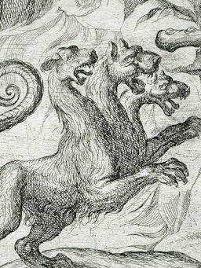
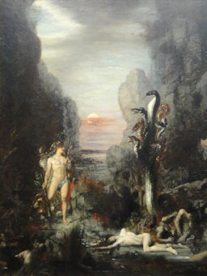
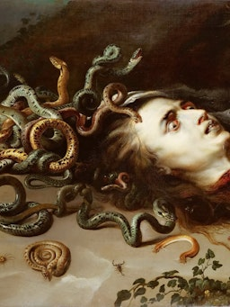

___________
Greek mythology is full of fantastic and terrifying creatures, many of whom were born at the dawn of creation. The one-eyed Cyclopes and the Hecatoncheires (“Hundred-Handers”), for example, were offspring of Gaia, the primordial earth deity. But there were countless other creatures in Greek mythology, diverse in appearance and abilities.
According to Roman legends, the twins, Romulus and Remus, were born in Alba Longa, southeast of Rome's eventual location.
They were from noble lineage. Their mother, a princess and daughter to the King of Numitor of Alba Longa, was usurped by his sibling, Amulius. Fearing a prophecy that the twins would end his reign, Amulius ordered their demise.
Fate had other plans, and the Tiber River's banks, where they were abandoned, became the place of their survival. They were saved by Tiberinus, the river deity, nurtured and breastfed by a she-wolf in the sanctuary of the Lupercal cave, located at the base of Palatine Hill.
|  |
CerberusThe three-headed guard dog of the Greek Underworld |
|  |
HydraMany-headed serpent slain by the Greek hero Heracles |
|  |
MedusaThe most fearsome of the Gorgons, whose gaze turned people to stone |